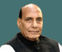

|
|
Before we get started, let’s first have a quick summary of who are the Union Council of Ministers.
The Union Council is led by the Prime Minister of India and other Ministers who exercise executive authority in India. They are the supreme decision-making body in India.
The Union Council of Ministers consists of :
Prime Minister of India Mr. Narendra Modi has taken oath as the 15th Prime Minister of India on 30th May 2019.
Several other ministers have also taken office on 30th May 2019. There are 76 Union Ministers which consist of:
Prime Minister Narendra Modi expanded the Cabinet by reshuffling and including a new Council
of Ministers which he called NaMo 2.0. On 7th July 2021, 43 new Ministers took oath as the new
Union Council of Ministers. Many current ministers were also given promotions for their good work.
| Sr.No. | Ministers | Images | Portfolio | 1 | Narendra Damodardas Modi |
|
|---|
| Sr.No. | Minister | Images | Portfolio |
|---|---|---|---|
| 1 | Raj Nath Singh |  | Defense Minister |
| 2 | Amit Shah |  |
|
| 3 | Nitin Jairam Gadkari |  |
|
| 4 | Nirmala Sitharaman |  |
|
| 5 | Narendra Singh Tomar |  |
|
| 6 | Dr. Subrahmanyam Jaishankar |  |
External Affairs Minister |
| 7 | Arjun Munda |  |
Tribal Affairs Minister |
| 8 | Smriti Zubin Irani |  |
|
| 9 | Piyush Goyal |  |
|
| 10 | Dharmendra Pradhan |  |
|
| 11 | Pralhad Joshi |  |
|
| 12 | Narayan Tatu Rane |  |
Micro, Small, & Medium Enterprises Minister |
| 13 | Sarbananda Sonowal |  |
|
| 14 | Virendra Kumar Khatik |  |
Social Justice & Empowerment Minister |
| 15 | Giriraj Singh |  |
|
| 16 | Jyotiraditya M. Scindia |  |
|
| 17 | Ashwini Vaishnaw |  |
|
| 18 | Pashu Pati Kumar Paras |  |
Food Processing Industries Minister |
| 19 | Gajendra Singh Shekhawat |  |
Jal Shakti Minister |
| 20 | Kiren Rijiju |  |
Law & Justice Minister |
| 21 | Raj Kumar Singh |  |
|
| 22 | Hardeep Singh Puri |  |
|
| 23 | Mansukh L. Mandaviya |  |
|
| 24 | Bhupender Yadav |  |
|
| 25 | Dr. Mahendra Nath Pandey |  |
Heavy Industries Minister |
| 26 | Parshottam Rupala |  |
|
| 27 | G. Kishan Reddy |  |
|
| 28 | Anurag Singh Thakur |  |
|